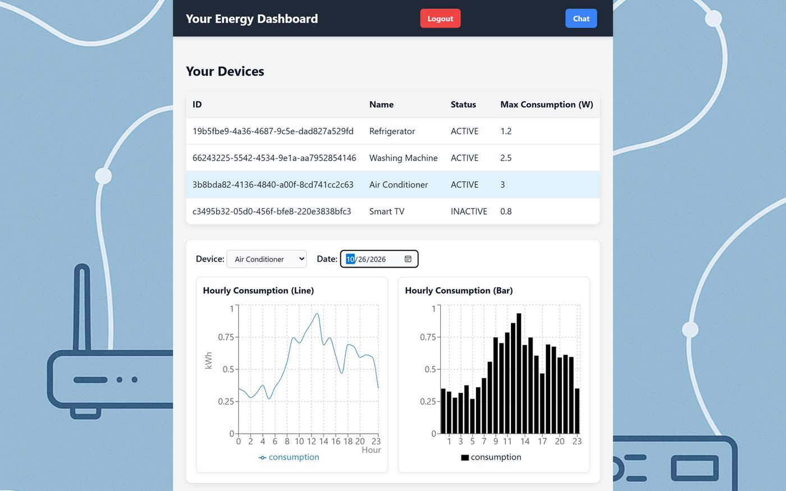
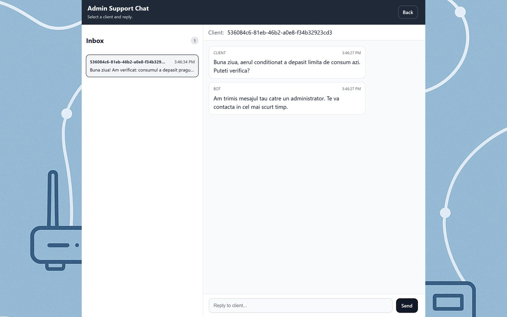

Smart Energy Management System
A platform for monitoring the electricity consumption of smart devices. Clients follow their own devices, admins manage users and hardware, and overconsumption alerts arrive in real time.
Design focusMaking live device data readable for a non-technical client, and giving support a clear path from chatbot to a human.
- Client dashboard: pick a device and a day, then see the hourly consumption as both a line and a bar chart.
- Separate client and admin experiences, each showing only what that role needs.
- Support chat that answers common questions automatically (rules or AI) and hands over to an admin when needed.
- Real-time overconsumption notifications over WebSockets.
ReactRechartsWebSocketsSpring BootRabbitMQDocker